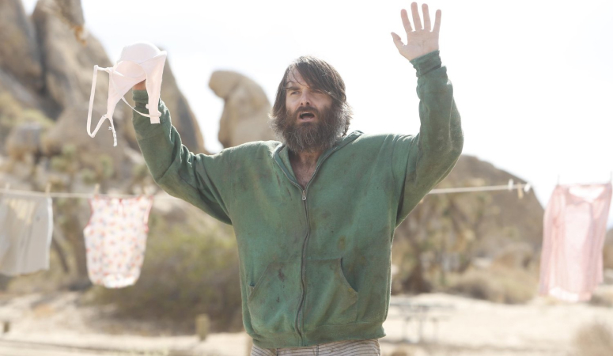
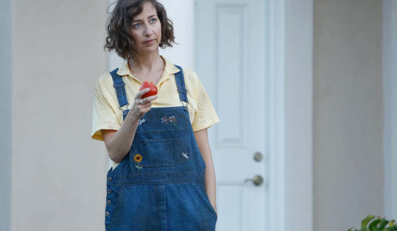
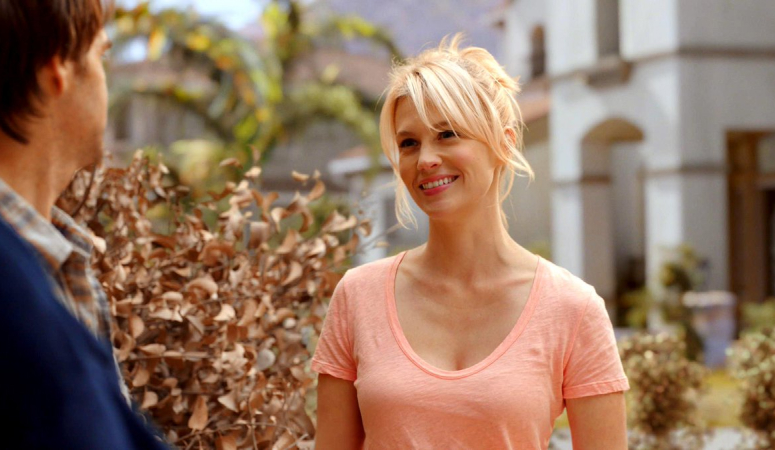

Тэнди
В довирусную жизнь он работал на временной работе и жил в однокомнатной квартире, за которую его родители платили за аренду.
(сначала другие персонажи называли его «Фил», затем «Тэнди»), среднего, социально непростого человека и, по-видимому, единственного человека, выжившего после того, как вирус уничтожил почти все население около года назад. Он возвращается в свой родной
город Тусон, штат Аризона , после того, как нарисовал «Живой в Тусоне» на рекламных щитах.
Кэрол
Она заставляет Фила жениться на ней, чтобы они могли работать над заселением Земли «законными» детьми.
Кэрол большую часть времени травит Фила за его плохое поведение. Кэрол проявляет сострадание и хорошие друзья с Мелиссой и Тоддом, но может затаить обиду и быть ярым моралистом. Кэрол и Фил разводятся в середине первого сезона, но Кэрол решает уйти с
Филом после того, как он изгнан из Тусона, и впоследствии они снова женятся.
Мелисса
Бывшый агент по недвижимости из Акрона, штат Огайо, которая раньше была замужем за покойным Грегом, пока он не изменил ей с полицейским.
Она встречает Фила и Кэрол после того, как они врезаются своим пикапом в ее лимузин. Она увидела оригинальную табличку Фила «Живой в Тусоне» и поехала в Тусон раньше Кэрол. Фил изначально очень привязан к ней и часто борется за ее привязанность, несмотря
на то, что он только что женился на Кэрол, но Мелисса не любит его и не доверяет ему.